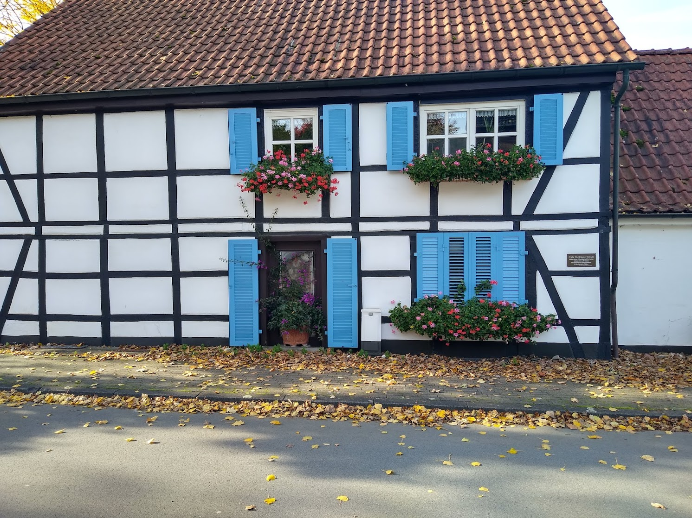
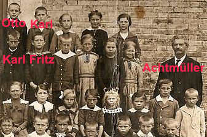

Die erste Dorfschule Mühlhausens lag an der Heerener Straße 39. Es wurde dort vom Jahr 1725 bis 1895 unterrichtet. Es gab in dieser Schule nur eine Klasse in der Schüler im Alter von 6 bis 12 Jahren unterrichtet wurden. Das Gebäude der Dorfschule ist bis heute erhalten.
Es gibt nicht viele besondere Ereignisse in der Geschichte der Dorfschule Mühlhausen. Der Skandal um den Dorflehrer Ottokar Achtmüller bildet hier eine Ausnahme. Ottokar Achtmüller war bekannt als sehr strenger Lehrer, der seine Arbeit sehr ernst nahm und besonders darauf achtete, dass die Schüler ihre Hausarbeiten machten. Wenn die Schüler ihr Hausarbeiten nicht gemacht hatten, nahm Achtmüller diese Schüler mit in sein nahegelegenes Haus, auf dem Hügel in der Nähe der Dorfschule.
Am 31. Oktober 1895 mussten die Schüler Max Müller, Otto Schneider, Fritz Schmidt und Karl Kummer mit zu Achtüller, um ihre Hausarbeiten zu machen. Die Kinder wurden nach diesem Tag nicht wieder gesehen.
Achtmüller wurde beschuldigt, die Kinder entführt zu haben. Er beteuerte seine Unschuld und es konnte ihm nicht nachgewiesen werden, dass er die Kinder entführt hatte.
Nach diesem Ereignis wurde die Schule geschlossen und der Lehrer verließ den Ort. Bis heute gibt es keine Spur von den Kindern.
Das alte Haus des Lehrers wurde abgerissen, als eine neue Siedlung auf dem Hügel erbaut wurde.